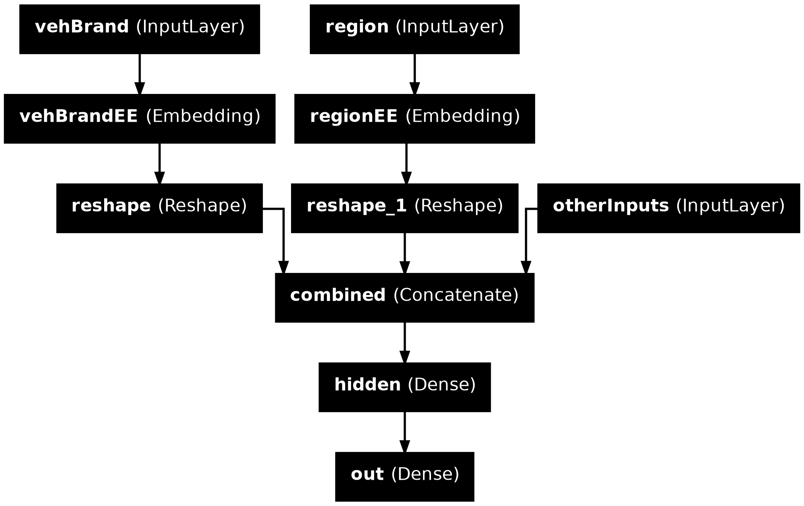
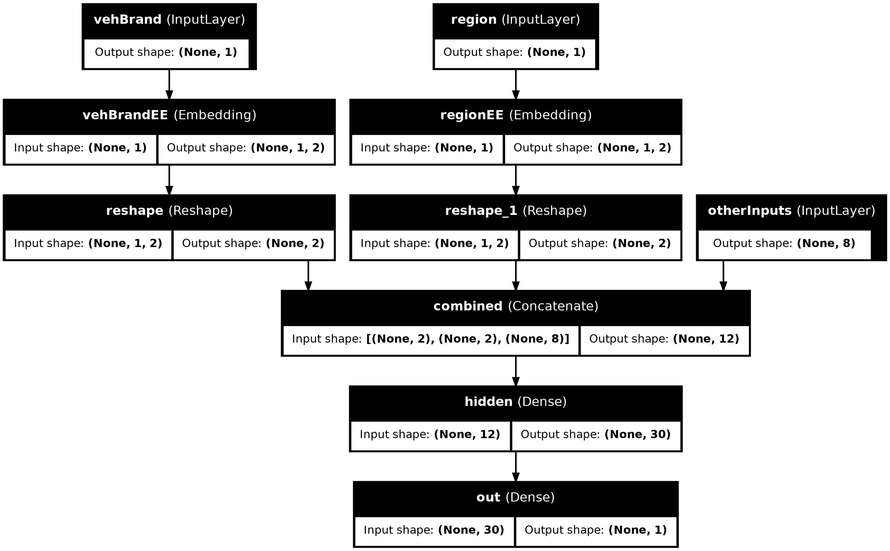
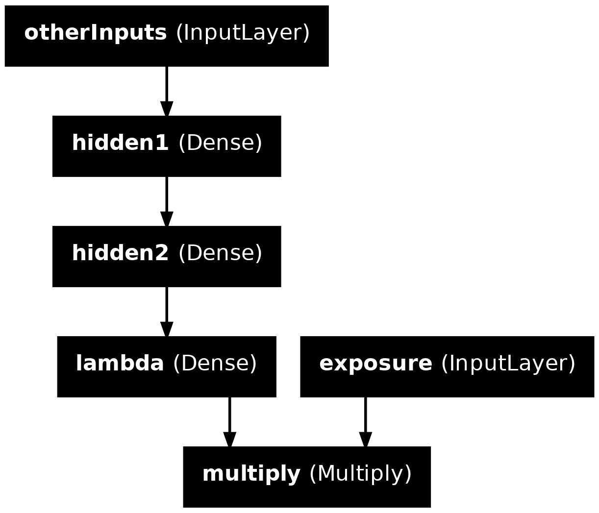

Entity Embedding
ACTL3143 & ACTL5111 Deep Learning for Actuaries
Entity Embedding
Lecture Outline
Entity Embedding
Categorical Variables & Entity Embeddings
Keras’ Functional API
French Motor Dataset with Embeddings
Scale By Exposure
Continuing on the French motor dataset example
Download the dataset if we don’t have it already.
Source: Nell et al. (2020), Case Study: French Motor Third-Party Liability Claims, SSRN.
Continuing on the French motor dataset example
| IDpol | ClaimNb | Exposure | Area | VehPower | VehAge | DrivAge | BonusMalus | VehBrand | VehGas | Density | Region | |
|---|---|---|---|---|---|---|---|---|---|---|---|---|
| 0 | 1.0 | 1 | 0.10000 | D | 5 | 0 | 55 | 50 | B12 | 'Regular' | 1217 | R82 |
| 1 | 3.0 | 1 | 0.77000 | D | 5 | 0 | 55 | 50 | B12 | 'Regular' | 1217 | R82 |
| ... | ... | ... | ... | ... | ... | ... | ... | ... | ... | ... | ... | ... |
| 678011 | 6114329.0 | 0 | 0.00274 | B | 4 | 0 | 60 | 50 | B12 | 'Regular' | 95 | R26 |
| 678012 | 6114330.0 | 0 | 0.00274 | B | 7 | 6 | 29 | 54 | B12 | 'Diesel' | 65 | R72 |
678013 rows × 12 columns
Data dictionary
IDpol: policy number (unique identifier)ClaimNb: number of claims on the given policyExposure: total exposure in yearly unitsArea: area code (categorical, ordinal)VehPower: power of the car (categorical, ordinal)VehAge: age of the car in yearsDrivAge: age of the (most common) driver in years
BonusMalus: bonus-malus level between 50 and 230 (with reference level 100)VehBrand: car brand (categorical, nominal)VehGas: diesel or regular fuel car (binary)Density: density of inhabitants per km2 in the city of the living place of the driverRegion: regions in France (prior to 2016)
Source: Nell et al. (2020), Case Study: French Motor Third-Party Liability Claims, SSRN.
The model
Have \{ (\mathbf{x}_i, y_i) \}_{i=1, \dots, n} for \mathbf{x}_i \in \mathbb{R}^{47} and y_i \in \mathbb{N}_0.
Assume the distribution Y_i \sim \mathsf{Poisson}(\lambda(\mathbf{x}_i))
We have \mathbb{E} Y_i = \lambda(\mathbf{x}_i). The NN takes \mathbf{x}_i & predicts \mathbb{E} Y_i.
Note
For insurance, this is a bit weird. The exposures are different for each policy.
\lambda(\mathbf{x}_i) is the expected number of claims for the duration of policy i’s contract.
Normally, \text{Exposure}_i \not\in \mathbf{x}_i, and \lambda(\mathbf{x}_i) is the expected rate per year, then Y_i \sim \mathsf{Poisson}(\text{Exposure}_i \times \lambda(\mathbf{x}_i)).
Where are things defined?
In Keras, string options are used for convenience to reference specific functions or settings.
is the same as
String arguments to .compile
When we run
it is equivalent to
Why do this manually? To adjust the object:
or to get help.
Keras’ “poisson” loss
Help on function poisson in module keras.src.losses.losses:
poisson(y_true, y_pred)
Computes the Poisson loss between y_true and y_pred.
Formula:
```python
loss = y_pred - y_true * log(y_pred)
```
Args:
y_true: Ground truth values. shape = `[batch_size, d0, .. dN]`.
y_pred: The predicted values. shape = `[batch_size, d0, .. dN]`.
Returns:
Poisson loss values with shape = `[batch_size, d0, .. dN-1]`.
Example:
>>> y_true = np.random.randint(0, 2, size=(2, 3))
>>> y_pred = np.random.random(size=(2, 3))
>>> loss = keras.losses.poisson(y_true, y_pred)
>>> assert loss.shape == (2,)
>>> y_pred = y_pred + 1e-7
>>> assert np.allclose(
... loss, np.mean(y_pred - y_true * np.log(y_pred), axis=-1),
... atol=1e-5)
Subsample and split
What values do we see in the data?
X_train["Area"].value_counts()
X_train["VehBrand"].value_counts()
X_train["VehGas"].value_counts()
X_train["Region"].value_counts()Area
C 5507
D 4113
...
B 2359
F 475
Name: count, Length: 6, dtype: int64VehBrand
B1 5069
B2 4838
...
B11 284
B14 136
Name: count, Length: 11, dtype: int64VehGas
'Regular' 10773
'Diesel' 7977
Name: count, dtype: int64Region
R24 6498
R82 2119
...
R42 55
R43 26
Name: count, Length: 22, dtype: int64Preprocess ordinal & continuous
Categorical Variables & Entity Embeddings
Lecture Outline
Entity Embedding
Categorical Variables & Entity Embeddings
Keras’ Functional API
French Motor Dataset with Embeddings
Scale By Exposure
Region column

French Administrative Regions
Source: Nell et al. (2020), Case Study: French Motor Third-Party Liability Claims, SSRN.
One-hot encoding
oe = OneHotEncoder(sparse_output=False)
X_train_oh = oe.fit_transform(X_train[["Region"]])
X_test_oh = oe.transform(X_test[["Region"]])
print(list(X_train["Region"][:5]))
X_train_oh.head()['R24', 'R93', 'R11', 'R42', 'R24']| Region_R11 | Region_R21 | Region_R22 | Region_R23 | Region_R24 | Region_R25 | Region_R26 | Region_R31 | Region_R41 | Region_R42 | ... | Region_R53 | Region_R54 | Region_R72 | Region_R73 | Region_R74 | Region_R82 | Region_R83 | Region_R91 | Region_R93 | Region_R94 | |
|---|---|---|---|---|---|---|---|---|---|---|---|---|---|---|---|---|---|---|---|---|---|
| 0 | 0.0 | 0.0 | 0.0 | 0.0 | 1.0 | 0.0 | 0.0 | 0.0 | 0.0 | 0.0 | ... | 0.0 | 0.0 | 0.0 | 0.0 | 0.0 | 0.0 | 0.0 | 0.0 | 0.0 | 0.0 |
| 1 | 0.0 | 0.0 | 0.0 | 0.0 | 0.0 | 0.0 | 0.0 | 0.0 | 0.0 | 0.0 | ... | 0.0 | 0.0 | 0.0 | 0.0 | 0.0 | 0.0 | 0.0 | 0.0 | 1.0 | 0.0 |
| ... | ... | ... | ... | ... | ... | ... | ... | ... | ... | ... | ... | ... | ... | ... | ... | ... | ... | ... | ... | ... | ... |
| 3 | 0.0 | 0.0 | 0.0 | 0.0 | 0.0 | 0.0 | 0.0 | 0.0 | 0.0 | 1.0 | ... | 0.0 | 0.0 | 0.0 | 0.0 | 0.0 | 0.0 | 0.0 | 0.0 | 0.0 | 0.0 |
| 4 | 0.0 | 0.0 | 0.0 | 0.0 | 1.0 | 0.0 | 0.0 | 0.0 | 0.0 | 0.0 | ... | 0.0 | 0.0 | 0.0 | 0.0 | 0.0 | 0.0 | 0.0 | 0.0 | 0.0 | 0.0 |
5 rows × 22 columns
Train on one-hot inputs
num_regions = len(oe.categories_[0])
random.seed(12)
model = Sequential([
Dense(2, input_dim=num_regions),
Dense(1, activation="exponential")
])
model.compile(optimizer="adam", loss="poisson")
es = EarlyStopping(verbose=True)
hist = model.fit(X_train_oh, y_train, epochs=100, verbose=0,
validation_split=0.2, callbacks=[es])
hist.history["val_loss"][-1]Epoch 12: early stopping0.7526934146881104Consider the first layer
every_category = pd.DataFrame(np.eye(num_regions), columns=oe.categories_[0])
every_category.head(3)| R11 | R21 | R22 | R23 | R24 | R25 | R26 | R31 | R41 | R42 | ... | R53 | R54 | R72 | R73 | R74 | R82 | R83 | R91 | R93 | R94 | |
|---|---|---|---|---|---|---|---|---|---|---|---|---|---|---|---|---|---|---|---|---|---|
| 0 | 1.0 | 0.0 | 0.0 | 0.0 | 0.0 | 0.0 | 0.0 | 0.0 | 0.0 | 0.0 | ... | 0.0 | 0.0 | 0.0 | 0.0 | 0.0 | 0.0 | 0.0 | 0.0 | 0.0 | 0.0 |
| 1 | 0.0 | 1.0 | 0.0 | 0.0 | 0.0 | 0.0 | 0.0 | 0.0 | 0.0 | 0.0 | ... | 0.0 | 0.0 | 0.0 | 0.0 | 0.0 | 0.0 | 0.0 | 0.0 | 0.0 | 0.0 |
| 2 | 0.0 | 0.0 | 1.0 | 0.0 | 0.0 | 0.0 | 0.0 | 0.0 | 0.0 | 0.0 | ... | 0.0 | 0.0 | 0.0 | 0.0 | 0.0 | 0.0 | 0.0 | 0.0 | 0.0 | 0.0 |
3 rows × 22 columns
<tf.Tensor: shape=(22, 2), dtype=float32, numpy=
array([[-0.21, -0.14],
[ 0.21, -0.17],
[-0.22, 0.1 ],
[-0.83, 0.1 ],
[-0.01, -0.66],
[-0.65, -0.13],
[-0.36, -0.41],
[ 0.21, -0.03],
[-0.93, -0.57],
[ 0.2 , -0.41],
[-0.43, -0.21],
[-1.13, -0.33],
[ 0.17, -0.68],
[-0.88, -0.55],
[-0.13, 0.05],
[ 0.11, 0. ],
[-0.46, -0.38],
[-0.62, -0.37],
[-0.19, -0.28],
[-0.22, 0.15],
[ 0.3 , -0.16],
[-0.28, 0.36]], dtype=float32)>The first layer
((22, 22), (22, 2), (2,))array([[-0.21, -0.14],
[ 0.21, -0.17],
[-0.22, 0.1 ],
[-0.83, 0.1 ],
[-0.01, -0.66],
[-0.65, -0.13],
[-0.36, -0.41],
[ 0.21, -0.03],
[-0.93, -0.57],
[ 0.2 , -0.41],
[-0.43, -0.21],
[-1.13, -0.33],
[ 0.17, -0.68],
[-0.88, -0.55],
[-0.13, 0.05],
[ 0.11, 0. ],
[-0.46, -0.38],
[-0.62, -0.37],
[-0.19, -0.28],
[-0.22, 0.15],
[ 0.3 , -0.16],
[-0.28, 0.36]])array([[-0.21, -0.14],
[ 0.21, -0.17],
[-0.22, 0.1 ],
[-0.83, 0.1 ],
[-0.01, -0.66],
[-0.65, -0.13],
[-0.36, -0.41],
[ 0.21, -0.03],
[-0.93, -0.57],
[ 0.2 , -0.41],
[-0.43, -0.21],
[-1.13, -0.33],
[ 0.17, -0.68],
[-0.88, -0.55],
[-0.13, 0.05],
[ 0.11, 0. ],
[-0.46, -0.38],
[-0.62, -0.37],
[-0.19, -0.28],
[-0.22, 0.15],
[ 0.3 , -0.16],
[-0.28, 0.36]], dtype=float32)Just a look-up operation
array([[-0.21, -0.14],
[ 0.21, -0.17],
[-0.22, 0.1 ],
[-0.83, 0.1 ],
[-0.01, -0.66],
[-0.65, -0.13],
[-0.36, -0.41],
[ 0.21, -0.03],
[-0.93, -0.57],
[ 0.2 , -0.41],
[-0.43, -0.21],
[-1.13, -0.33],
[ 0.17, -0.68],
[-0.88, -0.55],
[-0.13, 0.05],
[ 0.11, 0. ],
[-0.46, -0.38],
[-0.62, -0.37],
[-0.19, -0.28],
[-0.22, 0.15],
[ 0.3 , -0.16],
[-0.28, 0.36]], dtype=float32)Turn the region into an index
oe = OrdinalEncoder()
X_train_reg = oe.fit_transform(X_train[["Region"]])
X_test_reg = oe.transform(X_test[["Region"]])
for i, reg in enumerate(oe.categories_[0][:3]):
print(f"The Region value {reg} gets turned into {i}.")The Region value R11 gets turned into 0.
The Region value R21 gets turned into 1.
The Region value R22 gets turned into 2.Embedding
Fitting that model
Keras’ Embedding Layer
array([[-0.12, -0.11],
[ 0.03, -0. ],
[-0.02, 0.01],
[-0.25, -0.14],
[-0.28, -0.32],
[-0.3 , -0.22],
[-0.31, -0.28],
[ 0.1 , 0.07],
[-0.61, -0.51],
[-0.06, -0.12],
[-0.17, -0.14],
[-0.6 , -0.46],
[-0.22, -0.27],
[-0.59, -0.5 ],
[-0. , 0.02],
[ 0.07, 0.06],
[-0.31, -0.28],
[-0.4 , -0.34],
[-0.16, -0.15],
[ 0.01, 0.05],
[ 0.08, 0.03],
[ 0.08, 0.13]], dtype=float32)The learned embeddings
Entity embeddings

Embeddings will gradually improve during training.
Source: Marcus Lautier (2022).
Embeddings & other inputs

Illustration of a neural network with both continuous and categorical inputs.
We can’t do this with Sequential models…
Source: LotusLabs Blog, Accurate insurance claims prediction with Deep Learning.
Keras’ Functional API
Lecture Outline
Entity Embedding
Categorical Variables & Entity Embeddings
Keras’ Functional API
French Motor Dataset with Embeddings
Scale By Exposure
Converting Sequential models
random.seed(12)
inputs = Input(shape=(X_train_oh.shape[1],))
x = Dense(30, "leaky_relu")(inputs)
out = Dense(1, "exponential")(x)
model = Model(inputs, out)
model.compile(
optimizer="adam",
loss="poisson")
hist = model.fit(
X_train_oh, y_train,
epochs=1, verbose=0,
validation_split=0.2)
hist.history["val_loss"][-1]0.7535399198532104See one-length tuples.
Wide & Deep network

Add a skip connection from input to output layers.
Sources: Marcus Lautier (2022) & Aurélien Géron (2019), Hands-On Machine Learning with Scikit-Learn, Keras, and TensorFlow, 2nd Edition, Chapter 10 code snippet.
Naming the layers
For complex networks, it is often useful to give meaningul names to the layers.
input_ = Input(shape=X_train.shape[1:], name="input")
hidden1 = Dense(30, activation="leaky_relu", name="hidden1")(input_)
hidden2 = Dense(30, activation="leaky_relu", name="hidden2")(hidden1)
concat = Concatenate(name="combined")([input_, hidden2])
output = Dense(1, name="output")(concat)
model = Model(inputs=[input_], outputs=[output])Inspecting a complex model
Model: "functional_5"
┏━━━━━━━━━━━━━━━━━━━━━┳━━━━━━━━━━━━━━━━━━━┳━━━━━━━━━━━┳━━━━━━━━━━━━━━━━━━━┓ ┃ Layer (type) ┃ Output Shape ┃ Param # ┃ Connected to ┃ ┡━━━━━━━━━━━━━━━━━━━━━╇━━━━━━━━━━━━━━━━━━━╇━━━━━━━━━━━╇━━━━━━━━━━━━━━━━━━━┩ │ input (InputLayer) │ (None, 10) │ 0 │ - │ ├─────────────────────┼───────────────────┼───────────┼───────────────────┤ │ hidden1 (Dense) │ (None, 30) │ 330 │ input[0][0] │ ├─────────────────────┼───────────────────┼───────────┼───────────────────┤ │ hidden2 (Dense) │ (None, 30) │ 930 │ hidden1[0][0] │ ├─────────────────────┼───────────────────┼───────────┼───────────────────┤ │ combined │ (None, 40) │ 0 │ input[0][0], │ │ (Concatenate) │ │ │ hidden2[0][0] │ ├─────────────────────┼───────────────────┼───────────┼───────────────────┤ │ output (Dense) │ (None, 1) │ 41 │ combined[0][0] │ └─────────────────────┴───────────────────┴───────────┴───────────────────┘
Total params: 1,301 (5.08 KB)
Trainable params: 1,301 (5.08 KB)
Non-trainable params: 0 (0.00 B)
French Motor Dataset with Embeddings
Lecture Outline
Entity Embedding
Categorical Variables & Entity Embeddings
Keras’ Functional API
French Motor Dataset with Embeddings
Scale By Exposure
The desired architecture
Illustration of a neural network with both continuous and categorical inputs.
Source: LotusLabs Blog, Accurate insurance claims prediction with Deep Learning.
Preprocess all French motor inputs
Transform the categorical variables to integers:
Split the brand and region data apart from the rest:
Organise the inputs
Make a Keras Input for: vehicle brand, region, & others.
Create embeddings and join them with the other inputs.
from keras.layers import Reshape
random.seed(1337)
veh_brand_ee = Embedding(input_dim=num_brands, output_dim=2,
name="vehBrandEE")(veh_brand)
veh_brand_ee = Reshape(target_shape=(2,))(veh_brand_ee)
region_ee = Embedding(input_dim=num_regions, output_dim=2,
name="regionEE")(region)
region_ee = Reshape(target_shape=(2,))(region_ee)
x = Concatenate(name="combined")([veh_brand_ee, region_ee, other_inputs])Complete the model and fit it
Feed the combined embeddings & continuous inputs to some normal dense layers.
x = Dense(30, "relu", name="hidden")(x)
out = Dense(1, "exponential", name="out")(x)
model = Model([veh_brand, region, other_inputs], out)
model.compile(optimizer="adam", loss="poisson")
hist = model.fit((X_train_brand, X_train_region, X_train_rest),
y_train, epochs=100, verbose=0,
callbacks=[EarlyStopping(patience=5)], validation_split=0.2)
np.min(hist.history["val_loss"])0.6692776679992676Plotting this model
Why we need to reshape
Scale By Exposure
Lecture Outline
Entity Embedding
Categorical Variables & Entity Embeddings
Keras’ Functional API
French Motor Dataset with Embeddings
Scale By Exposure
Two different models
Have \{ (\mathbf{x}_i, y_i) \}_{i=1, \dots, n} for \mathbf{x}_i \in \mathbb{R}^{47} and y_i \in \mathbb{N}_0.
Model 1: Say Y_i \sim \mathsf{Poisson}(\lambda(\mathbf{x}_i)).
But, the exposures are different for each policy. \lambda(\mathbf{x}_i) is the expected number of claims for the duration of policy i’s contract.
Model 2: Say Y_i \sim \mathsf{Poisson}(\text{Exposure}_i \times \lambda(\mathbf{x}_i)).
Now, \text{Exposure}_i \not\in \mathbf{x}_i, and \lambda(\mathbf{x}_i) is the rate per year.
Just take continuous variables
Split exposure apart from the rest:
Organise the inputs:
Make & fit the model
Feed the continuous inputs to some normal dense layers.
out = lambda_ * exposure # In past, need keras.layers.Multiply()[lambda_, exposure]
model = Model([exposure, other_inputs], out)
model.compile(optimizer="adam", loss="poisson")
es = EarlyStopping(patience=10, restore_best_weights=True, verbose=1)
hist = model.fit((X_train_exp, X_train_rest),
y_train, epochs=100, verbose=0,
callbacks=[es], validation_split=0.2)
np.min(hist.history["val_loss"])Epoch 37: early stopping
Restoring model weights from the end of the best epoch: 27.0.8828736543655396Plot the model
Package Versions
from watermark import watermark
print(watermark(python=True, packages="keras,matplotlib,numpy,pandas,seaborn,scipy,torch,tensorflow,tf_keras"))Python implementation: CPython
Python version : 3.11.11
IPython version : 8.32.0
keras : 3.8.0
matplotlib: 3.10.0
numpy : 1.26.4
pandas : 2.2.3
seaborn : 0.13.2
scipy : 1.13.1
torch : 2.5.1+cu124
tensorflow: 2.18.0
tf_keras : 2.18.0
Glossary
- entity embeddings
- Input layer
- Keras functional API
- Reshape layer
- skip connection
- wide & deep network